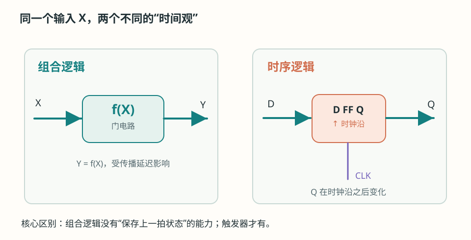
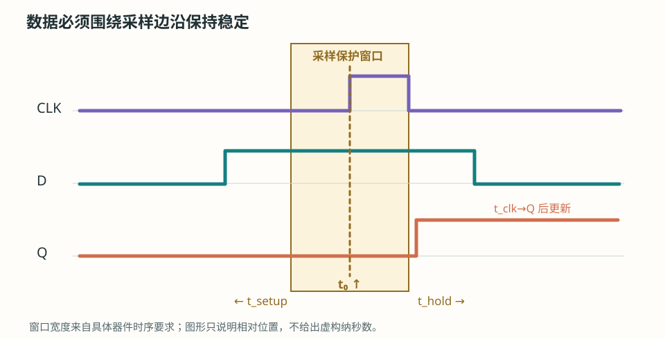

时间怎样进入数字电路？
用真值表、触发器与采样窗口重新理解组合逻辑、寄存状态和时序约束。
01 / 没有时钟与有时钟，是两种不同电路
输入从 0 变成 1 时，输出是“立即跟着变”，还是“等下一个时钟沿才变”？这两种行为分别对应组合逻辑和时序逻辑，是阅读每一行 RTL 之前必须先建立的模型。

组合逻辑是当前输入的函数，不依赖之前经历。时序逻辑的输出还依赖此前保存的状态。这个区分不是靠 Verilog 变量名字作出的，而是由电路如何触发和保持信息决定。
// 纯组合逻辑：无寄存状态
assign y = (a & b) | c;
// 1 位 D 触发器：在 clk 的上升沿采样
always @(posedge clk)
q <= d;组合逻辑中的“输入变，输出变”不是零时间传播，真实门电路存在传播延迟，仿真 RTL 常常隐藏这一物理细节。对同步电路，FF 输出也不是数学瞬间更新，而有时钟到 Q 的延迟。
02 / 真值表如何变成硬件结构？
以三输入组合函数 y = (a & b) | c 为例，只有当 c=1，或 a=b=1 时输出才为 1。判断完全由输入组合决定，不需要时钟。
| a | b | c | y |
|---|---|---|---|
| 0 | 0 | 0 | 0 |
| 0 | 0 | 1 | 1 |
| 0 | 1 | 0 | 0 |
| 0 | 1 | 1 | 1 |
| 1 | 0 | 0 | 0 |
| 1 | 0 | 1 | 1 |
| 1 | 1 | 0 | 1 |
| 1 | 1 | 1 | 1 |
AND、OR、NOT 可以通过门电路连接实现，也可在特定 FPGA 上映射为一张 LUT。RTL 写法描述布尔等价关系；综合器可做常量传播、化简、共享和重写，因此不能仅从源代码门符号数量推断最终 LUT 数量。
对于任何二输入布尔函数，可以枚举四种输入组合以核查功能；对于复杂逻辑，应将参考模型与 testbench 的全部输入组合对照。
03 / 时钟沿与建立 / 保持时间
触发器的基本前提不是“任意时刻都能正确读 D”。它需要输入在采样时钟沿附近满足建立时间（setup：采样前必须稳定的最短时间）和保持时间（hold：采样后仍需稳定的最短时间）。

对一条同步寄存器路径，设计者会使用时钟约束让 STA 工具检查数据到达、启动触发器到 Q 的延迟、组合路径延迟、时钟偏斜和不确定性。简单提高时钟频率并不等于解决 hold 问题：hold 是最小延迟检查，而 setup 主要制约最长路径。
04 / 复位、使能与时钟的边界
一个带同步复位与使能的寄存器，可以用以下代码描述：
module enabled_reg (
input wire clk,
input wire rst_n,
input wire enable,
input wire d,
output reg q
);
always @(posedge clk) begin
if (!rst_n)
q <= 1'b0;
else if (enable)
q <= d;
end
endmodule当 enable=0 时，过程没有赋值，时钟触发器自然保持已有 Q。这里“不写 else”不是无意的锁存器，因为这是沿触发时序逻辑。相反，组合过程少赋值往往会推断锁存器，见第四章。
异步复位通常写成 always @(posedge clk or negedge rst_n)；它在复位边沿也响应，需要根据目标架构考虑复位解除时的时序与同步释放。复位策略由系统需求与器件资源决定，不能只靠一行代码说“更安全”。
05 / 把采样动作写成可观察实验
最小实验可以使用 Icarus Verilog 编译下面的触发器与 testbench。将输入数据安排在时钟下降沿修改，随后观察上升沿采样效果，避免测试台在同一时刻与 DUT 竞争驱动。
module dff(input wire clk, input wire d, output reg q);
always @(posedge clk) q <= d;
endmodule
module tb;
reg clk = 0;
reg d = 0;
wire q;
dff dut (.clk(clk), .d(d), .q(q));
always #5 clk = ~clk;
initial begin
@(negedge clk); d = 1'b1;
@(negedge clk);
if (q !== 1'b1) $fatal(1, "q failed to sample 1");
d = 1'b0;
@(negedge clk);
if (q !== 1'b0) $fatal(1, "q failed to sample 0");
$display("PASS dff");
$finish;
end
endmodule保存为 dff_tb.v，运行 iverilog -g2012 -s tb -o /tmp/dff.vvp dff_tb.v && vvp /tmp/dff.vvp。预期输出 PASS dff。这验证功能与调度，不证明目标器件满足 setup/hold；后者需要约束与实现后的时序分析。
检查理解：将时钟加快到原来两倍，setup 与 hold 都会变容易吗？
不会。时钟周期缩短通常压缩允许的最大路径延迟（setup 预算），而 hold 检查关注数据是否过早到达。两者需要分别检查。